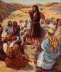

ابتدا میں کلام تھا
ایک بڑی پلچل
ہر دسمبر میں، ہم سال کے سب سے بڑے جشن کی توقع کرنا شروع کر دیتے ہیں: کرسمس! تمام دکانیں روشنیوں اور رنگوں سے جگمگاتی ہیں (ہر سال پہلے اور پہلے سے زیادہ رونق لگتی ہے)، ہم اپنے گھروں کے ارد گرد رقی کُمکمیں لگاتے ہیں اور ایک درخت کو سجاتے ہیں، اور یہاں تک کہ کئی شہروں کی سڑکیں کئی عمارتوں کے گرد چمکتی ہوئی روشنیوں سے جگمگاتی ہیں۔ اور سب سے بڑا جوش و خروش؟ پیش کرتا ہے! ہمیں کیا ملے گا؟ کیا یہ وہی ہوگا جس کی ہم امید کر رہے تھے؟ ہم صرف 25 دسمبر کا انتظار نہیں کر سکتے!
ایک نہایت خاموش آمد
تو، کیا یہ 2000 سال پہلے ہوا تھا؟ کیا لوگ بے صبری سے انتظار کر رہے تھے: کیا انہوں نے یسوع کی پیدائش کی توقع میں اپنے گھر سجا رکھے تھے؟ کیا انہوں نے اس طویل انتظار کی پیدائش کی توقع میں ایک دوسرے کے لیے تحائف خریدے تھے؟ جب وہ پیدا ہوا تو کیا پوری دنیا میں یہ اعلان ہوا کہ نجات دہندہ آخرکار آ گیا ہے؟
بالکل نہیں۔

جب یسوع بیت لحم میں پیدا ہوا تھا، جسے داؤد کا شہر بھی کہا جاتا ہے (یاد ہے؟)، صرف مٹھی بھر لوگ واقعی اس سے واقف تھے۔ وہاں مریم، یسوع کی ماں، اور یوسف، اس کا منگیتر تھا۔ جس سرائے میں مریم اور یوسف ٹھہرے ہوئے تھے وہاں کے اصطبل کے مالک لوگوں کو شاید معلوم تھا کہ اس عورت نے جنم دیا ہے، لیکن ان کے لیے اس کی کوئی خاص اہمیت نہیں تھی۔
لیکن ہم جانتے ہیں کہ آسمان پر بڑی خوشی تھی، کیونکہ لوقا 2 باب 8 تا 14 آیات ہمیں بتاتا ہے کہ یسوع کی پیدائش کی رات فرشتوں کا ایک بڑا گروہ کچھ چرواہوں پر ظاہر ہوا۔ اُنہوں نے نہ صرف یہ اعلان کیا کہ یسوع نامی ایک بچہ پیدا ہوا ہے، بلکہ اُنہوں نے حقیقت میں یہ اعلان کیا کہ وہ وہی مسیحا ہے جس کا یہودی لوگ اتنے عرصے سے انتظار کر رہے تھے!
لیکن اس میں مزید تیس سال لگیں گے اس سے پہلے کہ کوئی اور اسے تلاش کرنا شروع کر دے۔

چار آدمی، چار کہانیاں
یسوع کی موت، قیامت اور آسمان پر اُٹھائے جانے کے بعد کے سالوں میں، چار مختلف آدمیوں کو یسوع کی زندگی کے بارے میں لکھنے کی تحریک ملی۔ نئے عہد نامے کی پہلی چار کتابوں کا نام ان مردوں کے نام دیا گیا ہے جنہوں نے یہ سوانح حیات لکھی ہیں (انہیں عام طور پر انجیل کہا جاتا ہے): متی، مرقس، لوقا اور یوحنا۔انہوں نے ایک دوسرے سے اس پر بحث نہیں کی۔ یہ ممکن ہے کہ وہ نہیں جانتے تھے کہ کوئی اور یسوع کی کہانی لکھ رہا ہے۔ متی، لوقا اور یوحنا شاید مرقس کی انجیل کے بارے میں جانتے اور پڑھ چکے ہوں گے۔ علماء کا خیال ہے کہ یہ یسوع مسیح کی پہلی سوانح حیات تھی۔ لیکن چاروں انجیلیں ایک دوسرے سے آزادانہ طور پر لکھی گئیں۔
جب لوگ کسی واقعہ کے بارے میں کوئی کہانی سناتے ہیں، تو وہ عام طور پر یہ شامل کرنے کی کوشش کریں گے کہ ان کی رائے میں، سب سے اہم حصے کیا ہیں۔ یہی معاملہ متی، مرقس، لوقا اور یوحنا کے ساتھ تھا۔ کچھ واقعات اور کہانیاں شامل ہیں جو دوسروں میں نہیں ہیں؛ کچھ واقعات قدرے مختلف ترتیب میں بتائے گئے ہیں۔
مثال کے طور پر، صرف متی اور لوقا یسوع کی پیدائش کی کہانی بیان کرتے ہیں۔ شاید، لوقا کے ذہن میں، لوگوں کے لیے یہ جاننا ضروری تھا کہ یسوع ایک کنواری لڑکی سے پیدا ہوا تھا۔ مریم کا منگیتر، یوسف، یسوع کا حقیقی باپ نہیں تھا؛ یسوع خدا کا بیٹا تھا۔ لوقا 1 باب 26 تا 38 آیت)
متی کی انجیل یسوع کے خاندانی درخت سے شروع ہوتی ہے۔ کیا آپ کو یاد ہے کہ کس طرح، بہت پہلے کے وقت میں، خدا نے ابراہیم سے وعدہ کیا تھا کہ دنیا کو ایک بادشاہ کے ذریعے برکت ملے گی جو اس کی اولاد سے آئے گا (پیدائش 12 باب 3 آیت)؟ متی ہمیں یہ بتانے کا خیال رکھتا ہے کہ یسوع بادشاہ داؤد کی براہِ راست اولاد تھے، جو ابراہام کی براہِ راست اولاد تھا۔ یسوع اس قدیم پیشینگوئی کی تکمیل تھا۔ مرقس اور یوحنا کے معاملے میں، وہ یہ سمجھتے ہیں کہ، جب وہ یسوع کے بارے میں لکھ رہے تھے، تو سب کو معلوم ہو گا کہ وہ کس کے بارے میں بات کر رہے ہیں: اپنے زمانے میں، یسوع بہت مشہور تھا۔ لہذا، مرقس اور یوحنا یسوع کے بارے میں اپنی کہانیاں اس وقت شروع کرتے ہیں جب اس نے اپنی زمینی خدمت شروع کی تھی، یعنی جب یسوع تقریباً تیس سال کا تھا۔

ایک غیر متوقع مسیحا
جب ہم نے ان نبیوں کے بارے میں سیکھا جنہوں نے پیشین گوئی کی تھی کہ اسرائیل صور اور بابل پر گرے گا، تو ہم نے یہ بھی سیکھا کہ وہی انبیاء پیشین گوئی کر رہے تھے کہ بادشاہ داؤد کی نسل سے ایک بادشاہ، ایک مسیحا، ایک نجات دہندہ نکلے گا۔ ان پیشین گوئیوں نے یہودیوں کو یہ امید دلائی کہ اسرائیل دوبارہ ایک عظیم قوم بن جائے گا، کہ ایک بادشاہ اسرائیل کے تمام دشمنوں کو فتح کرنے کے لیے آئے گا اور انہیں ایک ایسی سپر پاور بنائے گا جو دنیا پر حکومت کرے گی۔لیکن یہودی تمام پیشین گوئیاں نہیں پڑھ رہے تھے۔ یا، اگر وہ پڑھ رہے تھے، تو وہ ان میں سے کچھ کو بہت غلط سمجھ رہے تھے۔ نبیوں نے مسیحا کی دو وضاحتیں دیں جو خدا بھیجے گا۔ ایک، واقعی، ایک طاقتور حکمران ہونا تھا۔ یہودیوں کی سمجھ میں نہ آنے والی بات یہ تھی کہ یہ بادشاہ ایک انتہائی غیر قابل ذکر جگہ سے آئے گا اور وہ بڑے دھوم دھام سے نہیں آئے گا (چھوٹے بیت الحم کی خاموش رات یاد ہے؟) یہ نیا بادشاہ ایسا آدمی ہو گا جو دکھ، غم اور درد کو جانتا ہو گا، بادشاہی شان اور طاقت کو نہیں۔
ایک شکست خوردہ، حوصلے پست لوگوں کے طور پر، یہودی کسی مسیحا کی تلاش نہیں کر رہے تھے جیسا کہ عاجز یسوع تھا۔ وہ اس سے کہیں زیادہ شاندار شخص کی تلاش میں تھے۔ اور یوں ہوا کہ جب یسوع آئے اور ان کے درمیان رہے تو انہوں نے مسیح کو دیکھتے ہی نہیں پہچانا۔

یسوع کی تعلیمات
یاد رکھیں کہ یسوع ایک ایسی جگہ پر پلا بڑھا جو کسی دوسرے ملک کے زیر اقتدار تھا: اس وقت تک، یہ طاقتور رومی سلطنت تھی۔ یسوع ایک بہت سادہ معاشرے میں پلا بڑھا۔ یہودی لوگ بہت مذہبی تھے، اور اس کے پڑوسی کسان یا ماہی گیر یا تاجر تھے (یوسف، اس کی والدہ کا شوہر، پیشے کے لحاظ سے بڑھئی تھا)۔।
شاید اسی وجہ سے، یسوع نے کہانیاں سنا کر روحانی سچائیاں سکھانے کی کوشش کی، جنہیں تمثیل کہا جاتا ہے، جن میں اکثر ایسی چیزیں شامل ہوتی ہیں جن سے اس کے معاشرے کے لوگ واقف ہوں گے:

- ایک کسان اپنے کھیت میں بیج بوتا ہے (متی 13 باب 2 تا 23 آیات)
- • ایک بیٹا جو اپنے والدین سے بغاوت کرتا ہے، لیکن اپنے گناہوں کے لئے بڑے پچھتاوا کے ساتھ ان کے پاس واپس آتا ہے۔ (لوقا 15 باب 11 تا 32 آیات)
- ایک چرواہا جو اپنی ایک بھیڑ کھو دیتا ہے (متی 18 باب 10 تا 14 آیات)

صدوقی
یسوع کے زمانے میں، کاہن (بائبل انہیں فریسی بھی کہتی ہے—ایک لفظ جس کا مطلب ہے "علیحدہ") یہودیوں کی روزمرہ زندگی پر حکمرانی کرتے تھے۔ کاہن اسرائیل کے بارہ قبیلوں میں سے ایک سے آئے تھے جنہیں خدا نے خاص طور پر اس کردار کے لیے منتخب کیا تھا: لاوی (لاوی کے قبیلے سے)۔ وہ یہودیوں کو ماضی کی طرح گمراہ ہونے سے روکنے کو اپنا کام سمجھتے تھے۔ یہ ان کا کام تھا، انہوں نے لوگوں کے لیے کلام کو پڑھنے اور اس کی تشریح کرنے کا عزم اٹھایا۔ (یاد ہے کہ ہم نے پہلے کیا کہا تھا کہ خدا ہر ایک کے لیے بائبل کا ارادہ رکھتا ہے؟)
یسوع لاوی کے قبیلے سے نہیں تھے، اس لیے یسوع کاہن نہیں تھے۔

ایک ربی، یا کلام کی سچائیوں اور علم کا استاد بننے کے لیے، ایک آدمی کو ایک خاص ربینیکل اسکول میں تربیت کے طویل عرصے سے گزرنا پڑتا تھا۔
یسوع ربینیکل اسکول نہیں گئے تھے، اس لیے فریسیوں نے انہیں استاد بننے کے لیے "قابل" نہیں سمجھا۔
لہٰذا، تقریباً اپنی وزارت کے آغاز سے ہی، یسوع کا مذہبی حکمرانوں سے اختلاف تھا۔ لوگوں کا ہجوم یسوع کی تعلیم سننے کے لیے جمع ہوا۔ اس کی تعلیمات کے سب سے مشہور مجموعوں میں سے ایک میں، جسے پہاڑی واعظ کہا جاتا ہے (یہ متی 5 اور لوقا 6 دونوں میں پایا جاتا ہے)، عملی طور پر اس نے جو بھی نکتہ پیش کیا وہ اس کے خلاف تھا جس پر فریسی لوگوں کو یقین دلاتے تھے۔
کچھ اہم خیالات جو یسوع چاہتے تھے کہ اُس کے پیراوکار سیکھیں، وہ یہ تھے:
- خدا لوگوں سے محبت کرتا ہے اور چاہتا ہے کہ وہ بدلے میں اس سے محبت کریں۔ خُدا کے لیے اپنی محبت ظاہر کرنے کا ایک طریقہ نہ صرف شریعت کی بلکہ روح کی بھی اطاعت ہے۔ لہٰذا، ایماندار ہونے کے ساتھ ساتھ، یسوع نے اپنے پیروکاروں سے کہا کہ وہ مہربان، رحمدل اور انصاف پسند ہوں۔
- • یسوع چاہتا ہے کہ اس کے پیروکار ان کی محبت سے پہچانے جائیں: اپنے ساتھی مومنوں کے لیے محبت، حتیٰ کہ ان کے دشمنوں سے بھی محبت۔ خدا نے ہمارے گناہوں کو معاف کرنے کی پیشکش کی ہے؛ وہ چاہتا ہے کہ ہم بھی ایک دوسرے کو معاف کر دیں۔
سب سے اہم چیز جو یسوع اپنے پیروکاروں کو بتانا چاہتا تھا وہ یہ تھا کہ وہ، یسوع، خُدا کا بیٹا تھا، اور یہ کہ گناہ سے نجات صرف اُس کے ذریعے ہی ملتی ہے۔ بائبل کی سب سے مشہور آیات میں سے ایک نئے عہد کا اعلان کرتی ہے جو خدا بنی نوع انسان کے ساتھ بنا رہا تھا، یوحنا 3 باب 16 آیت:
کِیُونکہ خُدا نے دُنیا سے اَیسی محبّت رکھّی کہ اُس نے اپنا اِکلَوتا بَیٹا بخش دِیا تاکہ جو کوئی اُس پر اِیمان لائے ہلاک نہ ہو بلکہ ہمیشہ کی زِندگی پائے۔
یسوع کی طرف سے یہ اعلان دو وجوہات کی بنا پر انقلابی تھا: پہلا، یہ خیال کہ یسوع خدا کا بیٹا تھا بہت سے یہودیوں کے لیے ناقابل قبول تھا۔ صرف ایک آدمی خدا کیسے ہو سکتا ہے؟ دوسرا خیال جسے یسوع کے زمانے کے مذہبی رہنما قبول نہیں کر سکتے تھے وہ یہ تھا کہ نجات اب صرف یہودیوں کے لیے مخصوص نہیں تھی۔ یسوع نے کہا کہ جو کوئی بھی اس پر ایمان رکھتا ہے وہ خدا کی بادشاہی میں داخل ہو سکتا ہے (یوحنا 1 باب 12 آیت)۔
صدُوقی
صدوقی، یہودیوں کا ایک نمایاں، اکثر دولت مند گروہ جو یسوع کے زمانے میں رہتا تھا، رومیوں کے ساتھ ایک طرح کا سیاسی بندوبست رکھتا تھا، تاکہ وہ ایک خاص مقدار میں سیاسی طاقت سے لطف اندوز ہوں۔ صدوقی بعض اوقات اپنے ساتھی یہودیوں سے رومن ٹیکس وصول کرنے کا کام سنبھالتے تھے، اور اکثر اس کے بارے میں بے ایمانی کرتے تھے، لوگوں کو اصل میں واجب الادا رقم سے زیادہ ادا کرنے کی ضرورت ہوتی تھی تاکہ وہ اپنے لیے حصہ رکھ سکیں۔ صدوقیوں کو بہت سے یہودی لوگ غدار سمجھتے تھے کیونکہ ان کے نفرت انگیز رومیوں کے ساتھ قریبی تعلقات تھے۔
یہودیوں میں اکثر بغاوت کی بات ہوتی تھی۔ وہ رومی حکمرانی کی سختی کے تحت چھیڑ چھاڑ کر رہے تھے۔ صدوقی یہودیوں اور رومیوں کے درمیان امن قائم رکھنا اپنا کام سمجھتے تھے۔ صدوقی سمجھتے تھے کہ یہودی رومیوں کو جتنا کم پریشان کریں گے، اتنا سب کے لییے آسانیاں پیدا ہوں گیں۔

یسوع کے ساتھ اختلاف
جیسا کہ ہم نے پہلے دیکھا تھا، یسوع لوگوں کے ہجوم کو تعلیم دیتا اور خُدا اور اُس کی محبت کے بارے میں ہر ایک کو خوشخبری سناتا رہا۔ فریسیوں کو یہ بالکل پسند نہ تھا۔ وہ یہودیوں میں واحد مذہبی اتھارٹی بننا چاہتے تھے۔ یسوع نے لوگوں کو روحانی معاملات کے بارے میں کاہنوں کے مقابلے میں زیادہ گہرائی سے سوچنا سکھایا، اور وہ اس کے لیے اسے پسند کرتے تھے۔

صدوقیوں نے بھی ہجوم کو پسند نہیں کیا جسے یسوع اپنی طرف متوجہ کر رہا تھا۔ لوگوں کے ہجوم کو آسانی سے قابو نہیں کیا جا سکتا تھا۔ اگر یسوع چاہتا تھا کہ روم کے خلاف بغاوت میں اُس کے اردگرد موجود ہجوم اُس کی پیروی کریں، تو وہ اُسے روکنے کے لیے کیا کر سکتے تھے؟
صدوقی جانتے تھے کہ یہودیوں کا ایک بڑا ہجوم بھی رومی فوج کی طاقت سے کوئی مقابلہ نہیں کر سکتا تھا۔ اگر رومیوں کو یہودی بغاوت کو ختم کرنا پڑا تو وہ انہیں بالکل کچل دیں گے (اور یسوع کی زندگی کے تقریباً 35 سال بعد، انہوں نے بالکل ایسا ہی کیا)۔ ان کی سیاسی طاقت کا اب رومیوں کے ساتھ کوئی مطلب نہیں ہوگا، اور صدوقی یسوع جیسے کسی بھی شخص کے لیے اپنی طاقت کھونے والے نہیں تھے!

سب سے بری چیز جو یسوع نے کی تھی، وہ، لوگوں کے سامنے یہ اعلان کرنا تھا کہ وہ دراصل خدا کا بیٹا ہے۔ یسوع نے انہیں بتایا کہ وہ وہی مسیحا ہے جس کا وہ اتنے عرصے سے انتظار کر رہے تھے۔ فریسیوں کے لیے، یہ توہین تھی (خدا کے لیے انتہائی بے عزتی)! یہودی قانون کے تحت یہ ایک جرم تھا جس کی سزا موت تھی۔
بار بار، یسوع نے اپنے مسیحا ہونے کے دعوے کی تائید کے لیے نشانیاں اور معجزات کیے تھے: اس نے بیماروں کو شفا دی، اندھوں کو بینائی دی، اور لنگڑے لوگوں کو دوبارہ چلنے کے قابل بنا دیا۔ یہاں تک کہ اُس نے ایک آدمی کو مُردوں میں سے زندہ کیا تھا!
یسوع کو فریسیوں کے لیے خطرہ سمجھا جاتا تھا (کیونکہ وہ لوگوں کو ان کے اختیار پر شک کرنے کا باعث بنا رہا تھا) اور صدوقیوں کے لیے (کیونکہ وہ ان کی طاقت کے لیے خطرہ ہو سکتا ہے)۔
فریسی اور صدوقی عام طور پر ایک دوسرے کے ساتھ دوستانہ یا تعاون کرنے والے نہیں تھے، لیکن اب ان کا ایک مشترکہ دشمن تھا یعنی یسوع۔

ایک رات، جب یسوع دعا کر رہا تھا، یہوداہ اسکریوتی، ایک آدمی جو یسوع کے سب سے قریبی دوستوں (اس کے بارہ شاگردوں) میں سے ایک تھا، فریسیوں اور صدوقیوں کے ایک گروہ کو لے گیا جہاں وہ جانتا تھا کہ یسوع دعا کرنا پسند کرتا ہے، گتسمنی کے باغ میں۔ یسوع نے گرفتار ہونے کے خلاف مزاحمت نہیں کی، حالانکہ وہ جانتا تھا کہ اس نے کوئی جرم نہیں کیا تھا۔
یسوع پر الزام لگانے والے اسے ہیکل کے سردار کاہن کائفا کے پاس لے گئے تاکہ ایک خفیہ مقدمہ چلایا جا سکے۔ انہوں نے کائفا کو بتایا کہ یسوع مسیح ہونے کے دعوے کی وجہ سے توہین کا مرتکب ہوا ہے۔

جب وہ سردار کاہن کے سامنے کھڑا ہوا تو یسوع نے کہا، "میں مسیح ہوں، اور تم مجھے خدا کے داہنے ہاتھ بیٹھے ہوئے دیکھو گے۔" (مرقس 14 باب 62 آیت)
اگرچہ یسوع کے خلاف "ثبوت" دینے کے لیے جھوٹے گواہ جمع کیے گئے تھے، کائفا نے فیصلہ کیا کہ صرف یسوع کا بیان ہی جرم کا اعتراف تھا۔ اس کا فیصلہ یہ تھا کہ یسوع کو موت کے گھاٹ اتار دیا جائے۔
یہودی رومی گورنر پیلاطس کی اجازت کے بغیر سزائے موت نہیں دے سکتے تھے۔ کاہنوں نے یسوع کو پیلاطس کے سامنے پیش کیا اور بتایا کہ یسوع نے غداری کی ہے: وہ مسیحا ہونے کا دعویٰ کرتا ہے، تو انہوں نے کہا، یہ وہی ہے جو خود کو یہودیوں کا بادشاہ کہتا ہے۔ رومی قانون کے تحت، کوئی بھی اپنے آپ کو بادشاہ نہیں کہہ سکتا تھا سوائے قیصر کے۔
پیلاطس نے حقیقت میں یہ نہیں سوچا تھا کہ یسوع بادشاہ ہونے کا ایک سنجیدہ دعویٰ کر رہا ہے، کیونکہ اس نے اپنے لیے دفاع کی پیشکش بھی نہیں کی جب اس پر مقدمہ چل رہا تھا۔ لیکن یہودی کاہنوں کا اصرار تھا کہ یسوع کو سزائے موت دی جائے۔ یہاں تک کہ جب پیلاطس نے انہیں سزا یافتہ قاتل، برابا، کو آزاد کرنے، یا یسوع کو آزاد کرنے کا انتخاب کرنے کی پیشکش کی، تب بھی لوگ چیخ اٹھے کہ یسوع کو سزائے موت دی جائے۔ (مرقس 15 باب 6 تا 13 آیات)

یسوع مرا اور پھِر جی اُٹھا
صلیب پر چڑھانا سزائے موت کی ایک شکل تھی جو عام طور پر رومی استعمال کرتے تھے۔ یہ مرنے کا سب سے شرمناک طریقہ تھا۔ اگرچہ یسوع کو پینٹنگز میں عام طور پر کمر کا کپڑا پہنے ہوئے کے طور پر پیش کیا جاتا ہے، لیکن درحقیقت اس کا لباس چھین لیا گیا تھا، تاکہ وہ سب کے دیکھنے کے لیے ننگا ہو۔ یہ خاص طور پر شرمناک تھا کیونکہ صلیب پر چڑھانے کو رومیوں نے بدترین قسم کے مجرموں کے لیے رکھا تھا۔
مار پیٹ کی ایک رات کے بعد، پہلے اس کے یہودی الزام لگانے والوں اور پھر رومی محافظوں کے ذریعے، یسوع کو اپنی صلیب اس جگہ لے جانے کے لیے کہا گیا جہاں اسے مصلوب کیا جانا تھا۔ وہ اپنی تمام ماروں سے اتنا کمزور تھا کہ وہ صلیب کے بوجھ کو برداشت نہیں کر سکتا تھا۔ راستے سے گزرے ہوئے ایک غلام کو یسوع کی صلیب لے جانے کے لیے کہا گیا تھا۔
جب وہ مصلوب کی جگہ پر پہنچے تو رومی محافظوں نے یسوع کے ہاتھوں اور پیروں کو صلیب پر کیلوں سے جڑ دیا۔ وہ سپاہی جو اُسے وہاں لائے تھے اُن کپڑوں کے لیے جوا کھیلتے تھے جو اُنہوں نے اُس سے لئیے تھا۔
اگرچہ صلیب پر مرنے میں عام طور پر کئی دن کی شدید تکلیف کا وقت لگتا تھا، لیکن یسوع کے زخموں اور رات سے پہلے خون کی کمی نے شاید اس کی موت کو تیز کر دیا تھا۔ وہ اسی دن مر گیا جس دن اسے صلیب پر کیلوں سے جڑا گیا تھا۔

جب کہ یسوع کے زیادہ تر دوستوں نے اسے چھوڑ دیا تھا جب وہ گتسمنی کے باغ میں گرفتار ہوا تھا، وہاں ارمتیہ کا یوسف نامی ایک شخص تھا جس نے پیلاطس کے پاس جانے اور یسوع کی لاش مانگنے کی ہمت کی تاکہ اسے صحیح طریقے سے دفن کیا جا سکے۔
اس نے یسوع کی لاش کو کتانی کپڑے میں لپیٹ کر ایک قبر میں رکھ دیا جو پتھر سے تراشی گئی تھی۔ اس کے بعد اس نے دروازے پر ایک بڑا پتھر لڑھکایا اور اپنے راستے پر چلا گیا۔
یسوع نے اپنے شاگردوں کو کئی بار یہ بتانے کی کوشش کی تھی کہ اسے بنی نوع انسان کے گناہوں کے لیے آخری قربانی کے طور پر مرنا پڑے گا، لیکن وہ کبھی نہیں سمجھ سکے تھے کہ یسوع خدا کا بیٹا ہے۔ اُنہوں نے استدلال کیا، اگر وہ مسیحا ہے جس کا خدا نے وعدہ کیا ہے، تو وہ کیسے مر سکتا ہے؟
یسوع کی موت کے تیسرے دن، کچھ عورتیں جو اس کی دوست تھیں قبر پر گئیں جہاں اسے دفن کیا گیا تھا۔ یہودیوں کا رواج تھا کہ میت کو تدفین کے لیے مخصوص مسالوں سے مسح کیا جائے۔ جاتے جاتے وہ آپس میں سوچنے لگے کہ قبر کے سامنے لڑھک جانے والے پتھر کو وہ کیسے حرکت دیں گے۔

جب عورتیں وہاں پہنچیں تو وہ یہ دیکھ کر حیران رہ گئیں کہ پتھر پہلے ہی لڑھک چکا تھا اور قبر خالی تھی۔
ایک فرشتہ، جو زمین پر بیٹھا تھا جہاں یسوع کی لاش تھی، اُن سے کہا، ”ڈرو مت! یسوع مُردوں میں سے جی اُٹھا ہے، جیسا کہ اُس نے کہا تھا! فرشتے نے عورتوں سے کہا کہ وہ اپنے دوستوں کے پاس واپس جائیں اور انہیں یہ عظیم خبر سنائیں کہ یسوع مردوں میں سے جی اٹھا ہے۔ (مرقس 16 باب 6 تا 7 آیات)
جس طرح یہودی مصر میں غلامی سے رہائی کی یاد میں ہر سال فسح کا جشن مناتے ہیں، اسی طرح یسوع کے پیروکار ایسٹر سنڈے کو تاریخ کے سب سے شاندار واقعہ کے طور پر مناتے ہیں: یسوع مردوں میں سے جی اُٹھا تھا، موت کی طاقت کو بنی نوع انسان پر فتح کر کے اور ہمیشہ کے لئیے ہمارے گناہوں کی معافی فراہم کر کے۔
فطری طور پر، یسوع کے دوست اس پر یقین نہیں کر سکتے تھے جب انہوں نے سنا کہ یسوع اپنی قبر میں نہیں ہے۔
لیکن یسوع اپنے جی اُٹھنے کے بعد کئی بار باقی گیارہ شاگردوں پر ظاہر ہوا۔ اس نے ان سے اس بارے میں بات کرنے میں کافی وقت گزارا کہ وہ کس طرح بہت سی پیشین گوئیوں کی تکمیل کر رہا تھا، اور ان کی آنکھیں آخرکار ان تمام سچائیوں کے لیے کُھل گئیں جو یسوع نے اپنے مصلوب ہونے سے پہلے انہیں بتانے کی کوشش کی تھی۔ (لوقا 24 باب 27 آیت)

یسوع آسمان پر چڑھ گیا
یسوع اپنے جی اُٹھنے کے بعد چالیس دنوں تک شاگردوں کے سامنے ظاہر ہوتا رہا۔ ایک بار، جب وہ ان کے ساتھ کھانا کھا رہا تھا، اس نے ان سے کہا کہ وہ یروشلم کو اس وقت تک نہ چھوڑیں جب تک کہ وہ روح القدس کا تحفہ حاصل نہ کر لیں جس کا ان سے وعدہ کیا گیا تھا۔ (یوحنا 14 باب 16 آیت)
آخری موقع پر جب یسوع ان پر ظاہر ہوا، شاگردوں نے اس سے پوچھا کہ کیا وہ اب اسرائیل کو اس کی سابقہ شان میں بحال کرنے والا ہے۔ یسوع نے جواب دیا کہ اُن وقتوں اور مِیعادوں کا جاننا جِنہِیں باپ نے اپنے ہی اِختیّار میں رکھّا ہے تمُہارا کام نہِیں۔ (اعمال 1 باب 7 آیت)
اور جب وہ سب اُس کے ساتھ کھڑے تھے، یسوع اُن کی آنکھوں کے سامنے آسمان پر اُٹھایا جانے لگا۔ شاگردوں نے دیکھا اور دیکھتے رہے جب تک کہ وہ یسوع کو مزید نہ دیکھ سکے۔ یسوع اپنے باپ کے ساتھ رہنے کے لیے آسمان پر چڑھ گیا تھا، لیکن کہانی وہیں ختم نہیں ہوئی۔ اصل میں، یہ صرف آغاز تھا!